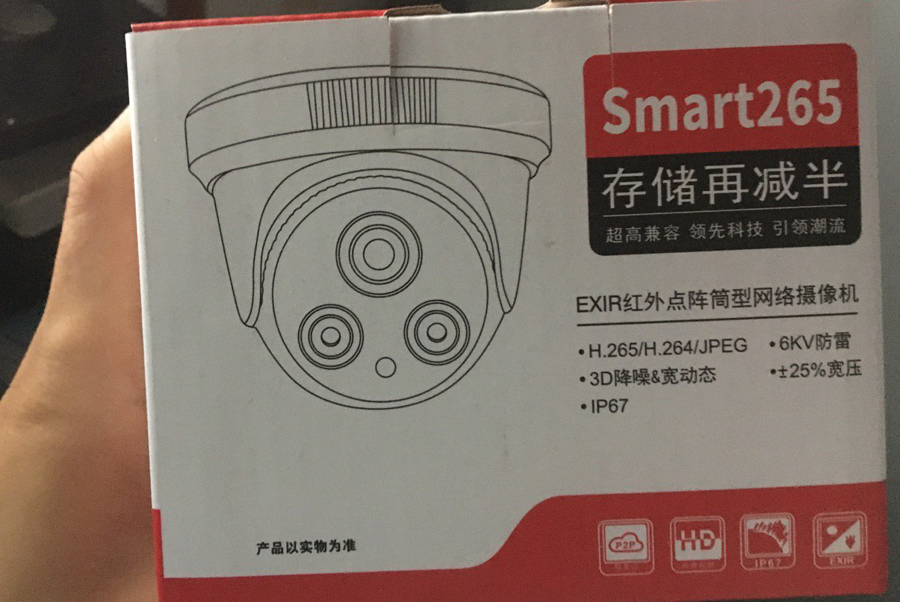
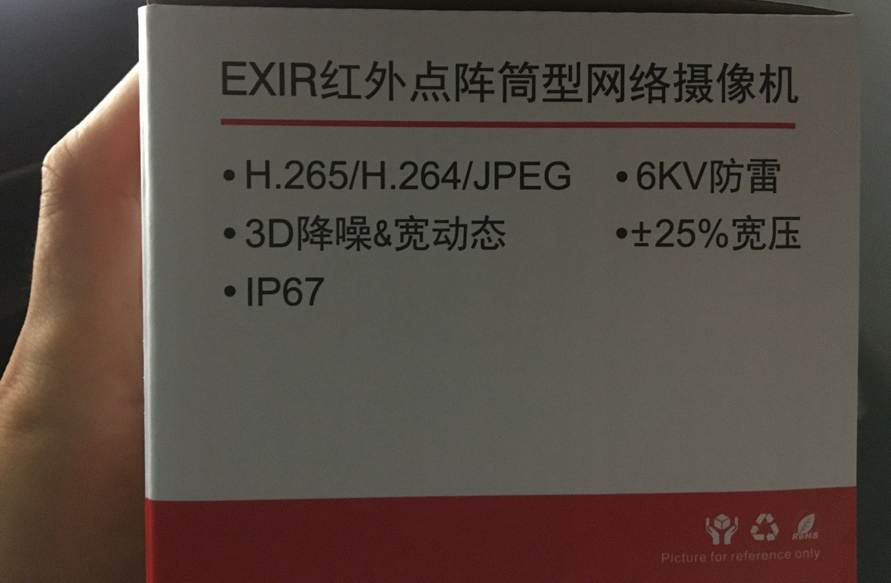
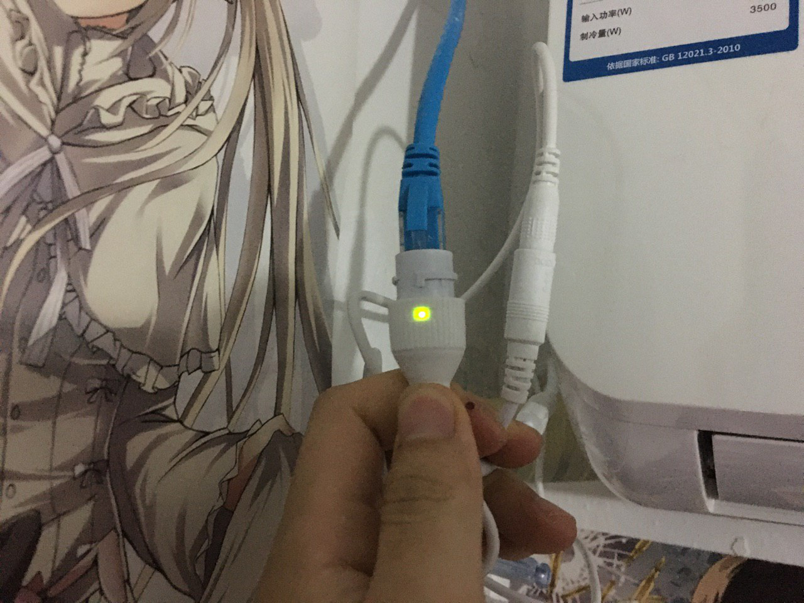

背景
由于自己住的是价格及其便宜的民宿，四人间的合租房间。房东家住的大概有二十号人吧，人多眼杂，上月舍友丢失了一台笔记本。自己的台式机幸免遇难未被盗走。所以决定装个 IP 摄像头，防患于未然😂
选购摄像头
在闲鱼和某宝上挑了很久很久，一直没有找到合适的。有那种 WiFi 摄像头，比如小米、海康威视、大华，还有其他的。价格也相对来讲便宜些，一般都在 100 元左右。不过这种摄像头坑爹的是，远程存储需要购买他们的云服务，最便宜的也要 60元/30G/年，真他奶奶的割韭菜。而且还不能单独使用 NAS 之类的存储。因为我需要的是将监控视频远程保存到服务器上，保存到自己的服务器上，我不喜欢把数据交给国内的毒瘤厂商。
摄像头根据传输介质大概分为模拟传输、网络传输。模拟传输就是采用的模拟信号，把监控视频流采集到专门的录像机上，一般录像机的价格要比一个摄像头的价格贵很多。另外还要给监控录像机供电也是一笔开销，遂不考虑使用模拟摄像头。

网络摄像头分为 WiFi 无线网络摄像头和网线摄像头。 WiFi 摄像头就是和小米那样的，另外房东家也是用的 WiFi 摄像头。网线摄像头分为独立供电、POE 供电两种。独立供电需要单独的 12V DC 给摄像头供电，而 POE 供电是将网线和电源绑在一起，通过 POE 交换机供电。这种 POE 供电的摄像头价格也比较贵，还需要单独购买 POE 交换机。遂也不决定购买 POE 供电的摄像头。


找了半天最终还是找到了一个摄像头，价格也比较便宜😂。特意问了卖家能不能通过浏览器访问、能不能不需要专用的摄像机来访问摄像头。卖家说是可以的。


安装摄像头
把路由器的电源适配器输出接口给剪了，又接了一个 DC 2.5mm 的插头，这样一个电源适配器同时供路由器和摄像头使用了😂。不用担心功率，一个摄像头和路由器总功耗还不到 8W。


穹妹哦😂，骨科？


配置摄像头
询问卖家怎么配置摄像头，卖家说搜索雄迈，然后下载相应的工具。配套软件下载 下载安装就行。


路由器 FRP 穿透
接下来就开始配置 frp ，将摄像头 rtsp 协议的端口 554 内网穿透到服务器上
local_ip 设置为摄像头的 IP ，端口号就是 rtsp 协议监听的端口号，这样就能从服务器断读取 rtsp 的视频流了。
1 | root@OpenWrt:~# cat /etc/frpc.ini |
RTSP 视频流
访问 RTSP 视频流，可以使用 PotPlayer 或 VLC 等播放器，使用 FFmpeg 也是可以读取视频流。服务器端使用 FFmpeg 读取视频流，命令行操作比较方便，设置定时任务读取分割摄像头的 RTSP 视频流即可
如何访问摄像头的 RTSP 视频流？，一般摄像头的固件供应商那里会有帮助手册，总算在官方网站找到了。
使用VLC按RTSP协议连接我司的设备网络串流的格式
——使用第3方的播放器通过RTSP连接我司设备的URL格式如下：
rtsp://$(IP):$(PORT)/user=$(USER)&password=$(PWD)&channel=$(Channel)&stream=$(Stream).sdp?real_stream——类似
rtsp://10.6.10.25:554/user=admin&password=&channel=1&stream=0.sdp?real_stream如果是通过公网需要将RTSP端口开放（ 默认是554），这个端口在网络服务->RTSP中可以设置
按照官方规定的 URL ，我的摄像头 RTSP 视频流访问 URL 就是如下：
1 | rtsp="rtsp://192.168.0.241:554/user=user&password=password&channel=Channel&stream=Stream.sdp?real_stream" |


然后服务器端安装好 FFmpeg ，使用 FFmpeg读取 rtsp 视频流即可
1 | apt install FFmpeg -y |
其中 -r 参数是指定帧率，-t 参数是指定时间。关于 FFmpeg 的详细使用参数可以去参考一下官方手册，在此就不赘述了😂
1 | ╭─root@sg-02 ~/log |
设置定时录制任务
1 | */1 * * * * /root/shell/monitor.sh |
选择每一分钟录制一分钟的是视频，没有找到其他合适的录制方法，每次录制录制都要重新建立 RTSP 链接，后面可能会写一个简单的 C 服务端直接建立 RTSP 的视频流，然后再切割视频文件。
不得不说 FFmpeg 真是强大的，偶尔了解了 FFmpeg 作者，巨牛逼的天才啊。
- 1997年他发现了最快速的计算圆周率的算法，是Bailey-Borwein-Plouffe 公式的变体。
- 2000年他化名Gérard Lantau，创建了 FFmpeg 项目。2004年他编写了一个只有138KB的启动加载程序TCCBOOT，可以在15秒内从源代码编译并启动Linux系统。
- 2003年开发了Emacs克隆QEmacs。2005年用普通PC和VGA卡设计了一个数字电视系统。
- 2009年12月31日，他声称打破了圆周率计算的世界纪录，算出小数点后2.7万亿位，仅用一台普通PC机。
- 2011年，他单用JavaScript写了一个PC虚拟机Jslinux 。这个虚拟机仿真了一个32位的x86兼容处理器，一个8259可编程中断控制器，一个8254可编程中断计时器，和一个16450 UART。
- Fabrice Bellard，法国著名程序员，QEMU、TinyCC、FFmpeg等作者。
不得不再提一嘴 FFmpeg 这个项目 从FFmpeg耻辱榜看开源软件的“潜规则”
FFmpeg是一个开源免费跨平台的视频和音频流方案，属于自由软件，采用LGPL或GPL许可证。2009年，韩国名软KMPlayer被FFmpeg开源项目发现使用了它们的代码和二进制文件，但没有按照规定/惯例开放相应说明/源码。被人举报后，KMPlayer进入了FFmpeg官网上的耻辱黑名单。最近，国内也有同样的产品被列入黑名单比如暴风影音、QQ影音等。
FFmpeg是一个跨平台的视频和音频流方案，属于自由软件，采用LGPL或GPL许可证（依据你选择的组件）。今年2月韩国播放软件KMPlayer被加入到FFmpeg耻辱名单中，随后网友yegle向FFmpeg举报，指出暴风影音使用了大量开源代码，侵犯了FFmpeg的许可证。5月10日，另一位用户cehoyos下载了暴风软件，用7z解压之后发现其安装程序内包含了大量的开源和私有解码器的dll：avcodec，avformat，avutil，x264，xvid，bass，wmvdmod等等。杀毒软件AntiVir报告lib_VoiceEngine_dll.dll是木马程序“TR\Spy.Legmir.SS.2”。之后暴风影音被正式加入到FFmpeg耻辱名单之列。